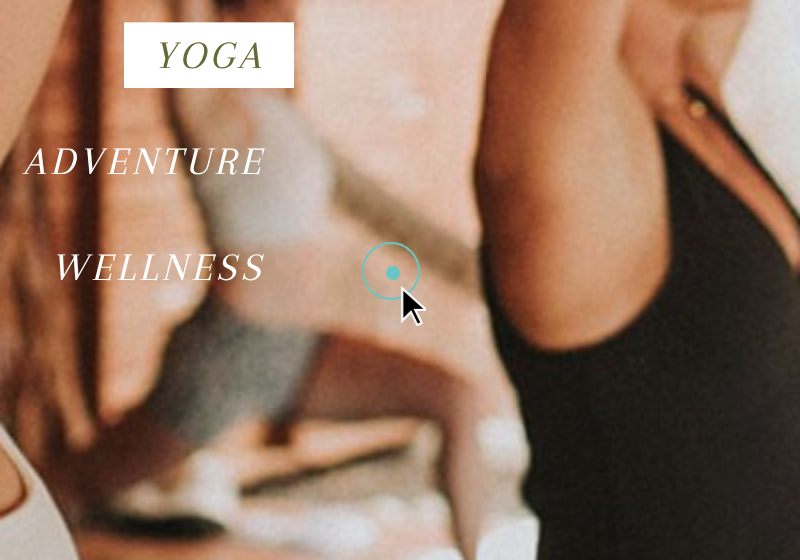
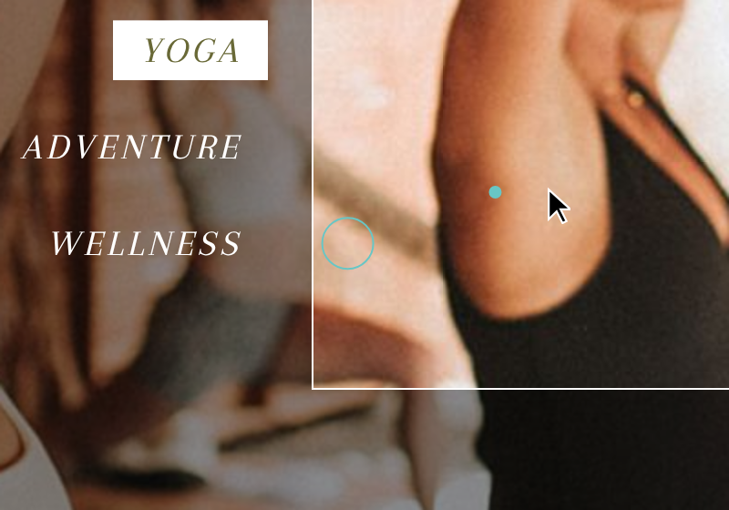
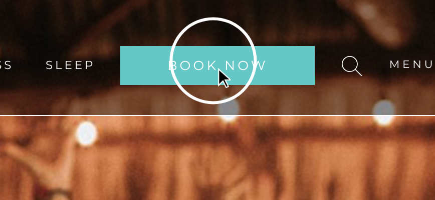

Feedback v3: wat er moet veranderen
Yoga, Zen & Tonic · 30 okt 2026 · nagekeken op de live site (yogazentonic.com), de Studio-code (main) en de gepubliceerde Sanity-inhoud.
code wijziging aan de website/Studio nodig · studio kan vandaag al zelf in de Studio · vraag keuze nodig van Rita & Philippe
| # | Feedback | Wat | Soort | Inschatting |
|---|---|---|---|---|
| 1 | Pointer zoals Sansara | Cursor herschrijven: gewone muis blijft, gekleurde stip + volgring met vertraging, ring groeit bij hover | code | klein (½ dag) |
| 2 | 7 samenwerkingen, Raf & Sol | Geen limiet in de code. Sol staat er al; Raf moet nog aangemaakt worden. Verbergen kan met een schakelaar | studio | geen code |
| 3 | Voorbije retreats zonder prijs | Op de terugblik-pagina enkel “Waar” & “Begeleiding”; prijs ook uit Google-beschrijving & JSON-LD | code | klein (1–2 u) |
| 4 | Testimonials & reviews | Samenvoegen tot één document Testimonial met vinkje “Op Home” + tabel met alle testimonials (vinkje in kolom 1) + migratie | code | 1–1,5 dag |
| 5 | Foto's Instagram-blok | Nu = de 6 nieuwste “Uitgelichte” foto's. Eigen keuzeveld op Home toevoegen | code | klein (2–3 u) |
| 6 | Yogamat-symbool | Nieuwe, langwerpige SVG (voorstel hieronder) | code | klein (1 u) |
| 7 | Tarieven privélessen | Privéles-blok uitbreiden met prijslijst + “Locatie & praktisch” | code | middel (½ dag) |
| 8 | SEO: retreats, events, yoga-aanbod | Retreats = Event ✓. Ontbreekt: wat Y,Z&T aanbiedt (Service/aanbod, regio, oprichters), JSON-LD op Lessen, landcodes | code studio | ½ dag |
| 9 | Privéles in de navigatie | Link “Privéles →” in het Lessen-menu (desktop) + chip (mobiel) | code | klein (1 u) |
| 10 | Samenwerkingen speels | Ronde portretten als botsende “deeltjes”: slepen/gooien, hover-label, klik = kaart. Prototype hieronder | code | 1 dag |
1 · Pointer zoals bij Sansara
Pointer toch niet ideaal, liefst als het kan zoals bij https://www.sansararesort.com/
Hoe het nu werkt
components/Cursor.tsx + app/globals.css:457-468: de gewone muispijl wordt verborgen (cursor: none !important), een kleine stip volgt de muis direct, een witte ring met mix-blend-mode: difference (kleuren omkeren) volgt met vertraging en wordt groter (34 → 64 px) boven links/knoppen/foto's.
Waarom dat “niet ideaal” voelt: geen echte muispijl meer (je verliest het gevoel waar je precies klikt), de ring keert de kleuren om (op foto's geeft dat vreemde kleuren), en de stip heeft geen vertraging, dus stip en ring lijken los van elkaar.
Hoe het bij Sansara werkt (uit hun code)
- Gewone muispijl blijft zichtbaar (nergens
cursor:none). De stip + ring zijn een extra laag. - Stip: effen kleur (hun turquoise
#68c6c5), ± 8 px, volgt met 0,3 s vertraging. - Ring: dunne lijn (0,05vw ≈ 1 px) in dezelfde kleur, ± 30 px, volgt met 0,7 s vertraging → mooie “sleep”.
- Hover (op knoppen/links met class
focuson): stip krimpt weg naar 0, ring schaalt ×3 (0,3 s). Op een donkere achtergrond wordt alles wit. - Enkel vanaf 1200 px breed (niet op tablet/gsm).
Screenshots van Sansara
Gemaakt op sansararesort.com (1440 px breed, pop-ups weggehaald). De zwarte pijl is de gewone muispijl; die verschijnt niet in een screenshot, dus heb ik hem op de exacte muispositie ingetekend.



white).Probeer het voorstel
Beweeg de muis hieronder (desktop). Stip & ring in onze ember-kleur; links wordt de ring groot, op donker wordt hij wit.
Wijzigingen code
app/globals.css:467-468: regelsbody.has-cursor … { cursor: none !important }weg → gewone muispijl terug.app/globals.css:458-466: ring zondermix-blend-mode, rand1px solid var(--ember), ± 30 px; stip 7 px invar(--ember). Hover viascale(ring ×2,6–3, stip → 0) i.p.v. width/height, mettransition: scale .3s. Variant.whitevoor donkere vlakken (hero, slotfoto, footer, lightbox).components/Cursor.tsx: ook de stip met vertraging laten volgen (bv.EASE_DOT = .25,EASE_RING = .1per frame ≈ Sansara's 0,3 s / 0,7 s); classbig→hoverdie ook op de stip komt;whitezetten als het element onder de muis in een donker vlak zit ([data-cursor=white]of.hero, .closing, .footer, dialog).- Media query: enkel
(pointer: fine) and (min-width: 1200px). Klik-“squeeze” mag blijven (subtiel).
2 · Samenwerkingen: 7, met Raf & Sol
Mensen met wie we samenwerkten: kunnen we er 7 hebben? Raf en Sol erbij? Hoe mensen verwijderen indien nodig?
Ja, er is geen maximum. Over ons toont automatisch elke gepubliceerde Persoon met Soort “Samenwerking” die niet verborgen is (sanity/queries.ts:344).
| Nu gepubliceerd (live) | Status |
|---|---|
| Elena, Fatim, Foodie Jive, Mel, Michèle | zichtbaar |
| Sol | staat er al (zichtbaar op Over ons) |
| Raf | bestaat niet als gepubliceerde persoon → nog aanmaken (of een concept staat nog niet op “Publiceren”) |
Met Raf erbij = 7. In het raster van 2 kolommen staat de 7e dan alleen op de laatste rij; dat oogt prima. vraag Liever 3 kolommen op brede schermen? Dan is het één regel in app/globals.css:301 (.collabs).
Raf toevoegen studio
- Studio → Over ons → rechtsboven het +-menu → Nieuwe persoon.
- Soort: Samenwerking. Vul Naam, Rol (NL + EN) en Portret in (verplicht), optioneel “Over”, Website, Andere links.
- Optioneel Volgorde: laag getal = eerst. Leeg = alfabetisch na de genummerde.
- Klik Publiceren (onderaan rechts). Pas dan staat Raf op de site.
Iemand weghalen studio
- Aanbevolen: “Verbergen op Over ons” aanzetten (schakelaar onderaan de persoon) → Publiceren. De persoon verdwijnt van Over ons, maar blijft als begeleider op oude retreatpagina's staan. Later terugzetten = schakelaar uit.
- Definitief: in de persoon ⋯-menu → Verwijderen. Lukt niet zolang die persoon bij een retreat onder “Begeleiding” staat; de Studio toont dan waar. Eerst daar weghalen.
Optioneel code: de uitleg “Verbergen = weg van Over ons, Verwijderen = overal weg” in “Zo werkt het” (studio/components/Help.tsx) zetten, zodat het niet opnieuw gevraagd wordt.
3 · Voorbije retreats: enkel Waar & Begeleiding
Bij 'voorbije retreats', willen we enkel de kopjes Waar en Begeleiding op website. Om de prijs er af te krijgen. Liefst vermijden om de prijs weg te doen uit studio, en niet enkel onderaan bij het kopje 'achteraf'.
De terugblik-pagina van een voorbije retreat toont nu 4 feiten naast “In een notendop”: Waar · Begeleiding · Prijs (vanaf €…) · Deelnemers (app/[lang]/retreats/[slug]/page.tsx:161-175). De prijs komt uit “Prijs vanaf” of de laagste prijs uit Praktisch.
Oplossing in de code, niets weghalen in de Studio: de prijs blijft bewaard (handig als je de retreat opnieuw organiseert), de site toont hem gewoon niet meer zodra de einddatum voorbij is.
Wijzigingen code
app/[lang]/retreats/[slug]/page.tsx:161-175:priceen de rijent.price+t.participantsuitfactshalen → enkel[t.where, …]en[t.hosts, …].app/[lang]/retreats/[slug]/page.tsx:56-62(generateMetadata): “vanaf € …” enkel in de Google-/deelbeschrijving zetten als de retreat nog komt.lib/jsonld.ts:131: geenoffers(prijs voor Google) meer voor voorbije retreats.- Kaartjes bij “Voorbij” op /retreats en het menu tonen al geen prijs (
components/sections.tsx:138-143, enkel “12 deelnemers”) → niets te doen. - Studio-uitleg bijwerken: “Prijs vanaf” (
studio/schemaTypes/documents/retreat.ts:142-149) + “Aantal deelnemers” (:316-325) → “Niet getoond bij een voorbije retreat”; groepsuitleg bovenaan (:22).
vraag “Enkel Waar en Begeleiding” = ook Deelnemers weg op de terugblik-pagina? Zo gelezen in het voorstel hierboven. Op het kaartje bij “Voorbij” blijft “12 deelnemers” staan, tenzij jullie dat ook weg willen.
4 · Testimonials & reviews → één document “Testimonial”
Ik snap niet goed hoe de 'testimonials' en de 'reviews' werken; Waar kan je die toevoegen in de studio? Ik voeg er toe, maar ze komen niet tevoorschijn.
Beslissing: reviews en testimonials zijn hetzelfde, één keer via het formulier en één keer met de hand ingevuld. We maken er één soort document van: Testimonial. Per testimonial zet je zelf een vinkje “Op Home”, en er komt een tabel met alle testimonials, met dat vinkje in de eerste kolom.
Waarom het nu verwarrend is
| Review (nu) | Testimonial (nu) | |
|---|---|---|
| Hoe binnen | Formulier op /retreats/<slug>/review → privé reviewSubmission (met e-mail) → status “Gepubliceerd” maakt een publieke kopie review (studio/structure/views.tsx:38-67) | Met de hand: Inhoud → Testimonials |
| Waar in Studio | Contact → Reviews | Inhoud → Testimonials (los van Reviews) |
| Op Home? | Vanzelf bij 4★+ (sanity/queries.ts:202), geen keuze | Enkel als je hem ook kiest in Home → tab Testimonials (home-page.ts:59-67), en dat is nu leeg → “komt niet tevoorschijn” |
| Op retreatpagina? | Ja | Nee |
| Sterren / taal | Score verplicht, 1 taal | Geen score, NL/EN |
De testimonial uit de link heet ook nog “[Naam]”, en Hilde staat er twee keer in (als review én als testimonial, bijna dezelfde tekst). De migratie hieronder lost dat mee op.
Nieuw model
Testimonial (publiek, staat op de site)
- Op Home: schakelaar (formulier: standaard aan bij 4★+, met de hand: standaard aan)
- Op de retreatpagina: schakelaar, standaard aan (enkel als er een retreat gekozen is)
- Naam · Tekst (NL/EN; de andere taal valt terug op het origineel, of vertalen met AI)
- Score 1–5, optioneel (geen score = geen sterren, telt niet mee in het gemiddelde)
- Retreat (optioneel) of Andere context (bv. “Lessen”)
- Bron: “Formulier” / “Zelf toegevoegd” (alleen-lezen)
- Datum, Taal, optioneel Volgorde op Home
Inzending (privé, blijft)
- Wat het formulier binnenstuurt, met e-mail. Blijft een apart privé-document (id met punt,
reviewSubmission.<uuid>), omdat de dataset publiek leesbaar is: een e-mail mag nooit in een publiek document staan. - Status Nieuw / Gepubliceerd / Geweigerd zoals nu. “Gepubliceerd” maakt of herstelt de Testimonial
testimonial-<uuid>met Bron = Formulier. Wie zelf iets toevoegt, maakt meteen een Testimonial, zonder inzending. - Interne naam
reviewSubmissionmag blijven (contactboek, revalidate, formulieren werken er al mee); alleen de titel in de Studio wordt “Testimonial (inzending)”.
Studio: menu en tabel
Contact → Testimonials (vervangt “Reviews” én Inhoud → Testimonials). Bovenaan de rij Tabel, daaronder de lijst per status (Nieuwe inzendingen · Op Home · Alle), met de knop + Nieuwe testimonial.
| Op Home | Naam | Score | Tekst | Retreat / context | Bron | Status | Taal | Datum | |
|---|---|---|---|---|---|---|---|---|---|
| Nathalie | ★★★★★ | Ongelooflijk positieve en aangename sfeer. Een week later… | Eifel 2026 | Formulier | Gepubliceerd | NL | — | n…@… | |
| Hilde | ★★★★★ | Zo genoten van de ongedwongenheid. En de vele mooie… | Spa 2025 | Formulier | Gepubliceerd | NL | 24 okt 2026 | h…@… | |
| [Naam] | — | Ik kwam voor de yoga en ging naar huis met een nieuwe vriendengroep. | Spa 2025 | Zelf toegevoegd | Online | NL/EN | 4 okt 2026 | — | |
| (nieuwe inzending) | ★★★★☆ | … | Eifel 2026 | Formulier | Nieuw | NL | — | … |
- Eerste kolom: vinkje “Op Home”, werkt meteen (patch op de Testimonial, de site wordt opnieuw opgebouwd). Grijs zolang een inzending nog niet gepubliceerd is.
- Klik op een rij → het document openen. Filters: retreat, bron, status, “enkel op Home”. Knop “Exporteer CSV” zoals bij Inschrijvingen. De e-mail is enkel zichtbaar in de Studio.
- Bouw: nieuw component
studio/components/TestimonialTable.tsxnaar het voorbeeld vanSignupTable.tsx(zelfde Sanity UI, filters, export). Eén query overtestimonial+reviewSubmission, gekoppeld via de uuid.
Wijzigingen code
studio/schemaTypes/documents/testimonial.ts: veldenshowOnHome,showOnRetreat,rating(optioneel),source,lang,date,orderRank; preview met sterren + “Home”-badge; placeholder “[Naam]” blokkeren.studio/schemaTypes/documents/review.ts: publiek typereviewweg;reviewSubmissionkrijgt titel “Testimonial (inzending)”.studio/schemaTypes/index.tsbijwerken.studio/structure/views.tsx:38-67: “Gepubliceerd” maakt eentestimonial(testimonial-<uuid>,source: "form",showOnHome: rating >= 4, tekst in het taalvak van de inzending). Bewerkingen blijven bewaard bij opnieuw publiceren, zoals nu.studio/structure/index.ts:224-236+:311: één menu Contact → Testimonials met Tabel bovenaan; los item onder Inhoud weg. Teller-badge blijft op nieuwe inzendingen.studio/schemaTypes/singletons/home-page.ts:20,59-67: keuzelijsttestimonialsweg (enkel de kop blijft), overzicht: “Testimonials met ‘Op Home’ aan”.sanity/queries.ts:107-123, 201-202, 280-284: één projectieTESTIMONIAL(naam, tekst, score, context); Home =*[_type=="testimonial" && showOnHome==true] | order(coalesce(orderRank,1000), date desc)[0...12]; retreatpagina + eerdere edities =showOnRetreat != false.app/[lang]/page.tsx:40-50: samenvoegen van twee lijsten weg;components/sections.tsx:229-270(ReviewList): sterren en gemiddelde enkel over wie een score heeft.app/api/revalidate/route.ts,lib/receipt.ts,studio/components/Help.tsx, “Nog in te vullen”: namen/uitleg bijwerken;sanity/types.tsopnieuw genereren.- Migratie
studio/scripts/migrate-testimonials.ts(eenmalig, met dry-run): de 2review-documenten →testimonial-<uuid>(Bron Formulier, Op Home aan); de 2 oude testimonials krijgen Bron “Zelf toegevoegd”; dubbele Hilde samenvoegen (die met score houden); verwijzingen inhomePage.testimonialsopruimen; daarna dereview-documenten weg. - De publieke URL
/retreats/<slug>/reviewblijft (er zijn al links verstuurd); het formulier mag als kop “Laat een testimonial achter” krijgen.
Inschatting: 1–1,5 dag (schema + migratie + tabel + queries). vraag Op de site het woord “Reviews” (blok op de retreatpagina) houden of ook “Wat deelnemers zeggen” noemen?
5 · Foto's in het Instagram-blok onderaan Home
Hoe kan ik de foto's wijzigen onderaan bij Instagram sectie?
Nu: het blok toont automatisch de 6 nieuwst geüploade foto's met “Uitgelicht” aan uit de Fotobank (sanity/queries.ts:200). Er staan 16 foto's op Uitgelicht, dus enkel de 6 recentst geüploade komen in beeld. “Uitgelicht” betekent ook: een grote tegel op de Gallery-pagina (studio/schemaTypes/documents/media-item.ts:47).
Vandaag studio: Fotobank → foto openen → “Uitgelicht” aan/uit → Publiceren. Omslachtig (je moet er 10 uitzetten om een oudere foto erin te krijgen, en dat verandert ook de Gallery). Het blok staat ook nergens in de Home-tabs, vandaar dat het niet te vinden is.
Wijzigingen code
studio/schemaTypes/singletons/home-page.ts: nieuwe tab Instagram met veld “Foto's Instagram-blok” (lijst met foto's uit de Fotobank, max. 6, sleepbaar voor de volgorde, met de bestaande foto-kiezerstudio/components/PhotoPicker.tsx) + regel in het Home-overzicht (SECTIONS).sanity/queries.ts:200:"instagram": coalesce(instagramPhotos[]->…, *[_type=="mediaItem" && highlight==true]…[0...6])→ eigen keuze, anders zoals nu.studio/schemaTypes/documents/media-item.ts:47: uitleg “Uitgelicht” bijwerken (Instagram enkel als Home → Instagram leeg is).sanity/types.tsopnieuw genereren (typegen).
6 · Yogamat-symbool bij Rita
Grafisch symbooltje bij rita van yoga mat is niet zo stilistisch. Lijkt nog te veel op rol WC papier. Maak langwerpiger en betere SVG.
Het symbool staat op Over ons boven Rita's portret (hover toont de foto). Nu: korte, dikke rol (± 1,7 : 1) met grote spiraal en een afgerold stuk ervoor → leest als WC-rol/keukenrol. Voorstel: lange, slanke rol (± 4 : 1), kleine ovale kop met fijne spiraal, twee banden en een draagriem erover: dat maakt meteen duidelijk dat het een yogamat is.
Wijziging code
components/icons.tsx:31-43 (YogaMat) vervangen door (zelfde lijnstijl 1,2 px, viewBox iets platter zodat de mat breder in beeld komt):
export const YogaMat = () => (
<svg viewBox="0 0 100 56" aria-hidden="true" strokeLinejoin="round" strokeLinecap="round">
{/* a long rolled-up mat on its side: the spiral end, two straps, a carry strap over the top */}
<ellipse cx="10" cy="36" rx="4.6" ry="11" />
<path d="M10 25 H88 A4.6 11 0 0 1 88 47 H10" />
<path d="M10 34.9 10.1 34.8 10.2 34.8 10.2 34.8 10.3 34.8 10.4 34.9 10.5 35 10.6 35.1 10.7 35.3 10.8 35.6 10.8 35.8 10.9 36.1 10.9 36.5 10.9 36.8 10.9 37.1 10.8 37.5 10.7 37.8 10.6 38.1 10.5 38.4 10.4 38.7 10.2 38.9 10 39 9.8 39.1 9.6 39.1 9.4 39 9.2 38.8 9.1 38.6 8.9 38.3 8.7 37.9 8.6 37.5 8.5 37 8.4 36.4 8.3 35.8 8.3 35.2 8.4 34.6 8.4 34 8.5 33.4 8.7 32.9 8.9 32.4 9.1 31.9 9.3 31.6 9.6 31.3 9.9 31.1 10.2 31.1 10.5 31.1 10.8 31.3 11.1 31.5 11.4 31.9 11.7 32.4 11.9 33 12.1 33.7 12.3 34.4 12.4 35.2 12.5 36.1 12.5 37 12.4 37.9 12.3 38.7 12.1 39.6 11.9 40.4 11.6 41.1 11.3 41.7 11 42.2 10.6 42.5 10.2 42.8 9.8 42.8 9.3 42.8 8.9 42.5 8.5 42.2 8.1 41.6 7.8 41 7.4 40.2 7.2 39.3 7 38.3 6.8 37.2 6.8 36 6.8 34.9 6.8 33.7 7 32.6 7.2 31.5 7.5 30.5 7.8 29.6 8.2 28.8 8.7 28.2 9.1 27.7 9.7 27.4 10.2 27.3 10.8 27.3 11.3 27.6 11.8 28.1 12.3 28.8 12.8 29.6 13.2 30.6 13.5 31.7 13.8 33 13.9 34.3 14 35.7 14 37.2 14 38.6 13.8 40 13.5 41.4 13.2 42.6 12.8 43.7 12.3 44.7 11.7 45.5 11.1 46.1 10.5 46.5 9.8 46.6 9.2 46.6 8.5 46.2 7.9 45.7 7.3 44.9" />
<path d="M24.4 25 A4.6 11 0 0 1 24.4 47 M27.6 25 A4.6 11 0 0 1 27.6 47 M70.4 25 A4.6 11 0 0 1 70.4 47 M73.6 25 A4.6 11 0 0 1 73.6 47" />
<path d="M27 25 C38 11 60 11 71 25" />
<path d="M29.2 25 C39 14 59 14 68.8 25" />
</svg>
);Alternatief studio: bij Rita (Over ons → Rita) kan je in het veld Voorwerp een eigen foto zetten (bv. haar opgerolde mat); dan wordt die getoond i.p.v. de tekening.
7 · Tarieven privélessen
Ik zou nog graag weten hoe ik voor de privelessen al deze info toevoeg: Tarieven Privélessen · Prijzen per persoon (1-op-1 € 75, Duet € 45 p.p., Trio € 35 p.p.) · Locatie & Praktisch (Waar, Vervoer)
Nu: Studio → Lessen → Lessen-pagina → tab Privéles heeft enkel Kop, Tekst (max. 300 tekens), Praktisch (1 grijze regel, max. 80 tekens), Foto en Knop (studio/schemaTypes/singletons/lessons-page.ts:89-102). Live staat: “60 min · prijs 70€ · Mortsel of bij jou thuis (prijs is excl. verplaatsingskosten)”. Een prijslijst met 3 regels + Waar/Vervoer past daar niet in → er moeten velden bij.
Voorstel: zo ziet het blok eruit
Tarieven privélessen
Wil je persoonlijke begeleiding op maat, alleen of in een klein groepje?
Prijzen per persoon
- Privéles (1-op-1)€ 75
- Duet (2 personen)€ 45 p.p.
- Trio (3 personen)€ 35 p.p.
Locatie & praktisch
- Waar
- In Mortsel of bij jou thuis (binnen een straal van 10 km).
- Vervoer
- Bij lessen op locatie worden eventuele vervoersonkosten apart verrekend.
Contacteer Rita
Wijzigingen code
studio/schemaTypes/singletons/lessons-page.ts:89-102(objectprivate) uitbreiden met:ratesTitle(NL/EN, “Prijzen per persoon”)rates[]: per regel Omschrijving (NL/EN, bv. “Duet (2 personen)”), Bedrag (€), schakelaar “per persoon” (→ “p.p.” / “pp”)detailsTitle(NL/EN, “Locatie & praktisch”)details[]: per regel Kopje (Waar, Vervoer…) + Tekst (NL/EN)- het oude veld “Praktisch” blijft als optionele korte regel (bv. “60 min”), of verbergen als het leeg is
sanity/queries.ts:306: nieuwe velden mee ophalen (mett()voor NL/EN).app/[lang]/lessen/page.tsx:222-254: prijslijst + Waar/Vervoer tonen onder de tekst, zelfde stijl als “Praktisch” op de retreatpagina; bedragen viaeuro()(lib/format.ts).lib/dictionary.ts: standaardkoppen NL/EN (“Prijzen per persoon” / “Prices per person”, “Locatie & praktisch” / “Location & practical”, “p.p.” / “pp”).- Optioneel: JSON-LD
Offers voor de privélessen (Google),lib/jsonld.ts. sanity/types.tsopnieuw genereren; Lessen-overzicht in de Studio (vinkjes per blok) aanvullen.
Daarna invullen studio: Lessen → Lessen-pagina → tab Privéles → Kop “Tarieven privélessen”, Tekst = de introzin, 3 prijsregels, 2 praktische regels → Vertalen (AI) voor EN → Publiceren.
8 · SEO: begrijpt Google dat dit retreats/events zijn, en dat Yoga, Zen & Tonic yoga aanbiedt?
Kort: de retreatpagina's zijn al goed (Google ziet ze als Event). Wat ontbreekt: Google weet nergens wat Yoga, Zen & Tonic doet (yoga, lessen, privéles, regio Antwerpen). Dat staat enkel in de tekst, niet in de gestructureerde data. Gecontroleerd op de live pagina's.
Wat al goed zit ✓
| Pagina | Wat Google krijgt |
|---|---|
| Retreatpagina's (komend én voorbij) | JSON-LD Event (naam, data, plaats + verblijf, organisator = Yoga, Zen & Tonic, begeleiders als performer, foto, prijs + volzet/beschikbaar) + BreadcrumbList (lib/jsonld.ts:73-145). Eigen title & description per retreat, canonical, NL/EN-hreflang, eigen deelafbeelding. |
| Home | Organization + WebSite (naam, logo, e-mail, telefoon, Instagram/Facebook). |
| Sitemap / robots | Alle pagina's in NL + EN, met hreflang en laatste wijziging; Studio en API uitgesloten. |
Reviewformulier /retreats/<slug>/review | Terecht noindex: het is enkel een formulier. De reviews zelf staan op de (geïndexeerde) retreatpagina. |
Wat beter kan code
| # | Probleem | Oplossing | Belang |
|---|---|---|---|
| a | Geen “wat doen we”: Organization heeft geen aanbod, geen adres/regio, geen oprichters. | organizationLd uitbreiden: knowsAbout (Yoga, Pilates, Meditatie, Freediving), areaServed (Antwerpen, Mortsel), founder (Rita, Philippe als Person), hasOfferCatalog met 3 Services: “Yogaretreats”, “Yoga- en Pilateslessen”, “Privéles yoga & Pilates”. En deze Organization op elke pagina meesturen (nu enkel Home), zodat de organisator van een Event volledig is. | hoog |
| b | Lessen-pagina zonder gestructureerde data, H1 is gewoon “Lessen”. | app/[lang]/lessen/page.tsx: JSON-LD Service per stijl (Ashtanga, Vinyasa, Pilates Mat/Reformer, provider = Organization, areaServed Antwerpen) + Service “Privéles” met Offers (€ 75 / € 45 / € 35 p.p., zie #7). Openingstitel bv. “Yoga- & Pilateslessen in Antwerpen” (in de Studio: Lessen-pagina → Openingsbeeld). | hoog |
| c | Land als tekst: addressCountry: "Egypte", "België"; plaats “Ardense bossen · Spa”. | ISO-code meesturen (EG, BE): veld “Landcode” of een vaste lijst in retreat.ts; addressLocality = enkel de plaats (“Spa”), de omschrijving naar location.name. | middel |
| d | Event-type te algemeen + geen taal. | Event blijft het juiste type (er is geen “Retreat” in schema.org), maar voeg about/keywords (“yoga retreat”, “freediving”), inLanguage en organizer.logo toe. Bij voorbije retreats: geen offers (zie #3). | laag–middel |
| e | Titel ≠ openingstitel bij voorbije retreats: title “Spa: Yoga & Hike”, H1 “Ardennen: Yoga & Spa”. | Inhoud: in de Studio dezelfde naam gebruiken (retreat → Titel en Openingsbeeld → Titel). Eventueel waarschuwing in de Studio als ze verschillen. | middel studio |
| f | Slug “Rochefort” met hoofdletter en zonder jaar (de andere: eifel-2026). | In de Studio wijzigen naar rochefort-2027 (nu het nog niet gedeeld is) + slug-validatie “kleine letters, met jaar”. | middel studio |
| g | Over ons: Rita & Philippe niet als Person. | JSON-LD Person voor beiden (jobTitle, worksFor, sameAs Instagram) op Over ons. | laag |
| h | Sterren in Google? | Niet doen: Google toont geen review-sterren voor Events, en reviews die een organisatie over zichzelf op de eigen site zet, komen sinds 2019 ook niet in aanmerking. Een AggregateRating heeft dus geen zin. | niet nodig |
Daarna controleren met de Rich Results Test en in Search Console (sitemap indienen, Event-rapport).
9 · Privéles in de navigatie
Ja, dat is logisch: het blok staat onderaan de Lessen-pagina (#prive) en is nu enkel te vinden door helemaal te scrollen. Twee plaatsen in components/Nav.tsx:
- Desktop-menu “Lessen” (
Nav.tsx:147-162): in de onderste balk naast “📍 studio's” en “Weekplanning →” een derde link “Privéles →” naarhref(lang, "lessons", { hash: "prive" }). Alternatief: een 5e kaart naast de stijlen met icoonpeopleen de korte tekst uit de Studio. Voorstel: link in de balk, zodat het raster van 4 stijlen blijft. - Mobiel menu (
Nav.tsx:197-205,subs): chip “Privéles” na “Studio's”. - Enkel tonen als het blok bestaat:
hasPrivate: defined(*[_id=="lessonsPage"][0].private.title)inSETTINGS_QUERY(sanity/queries.ts), zoals bij de studio's. lib/dictionary.ts:chips.private“Privéles” / “Private class”. Optioneel ook in de footer onder Aanbod.
10 · Samenwerkingen als speels, interactief blok
Idee: op Over ons worden de ronde portretten “deeltjes” die zacht rondzweven, tegen elkaar en tegen de randen botsen, en waarmee een bezoeker kan spelen (vastpakken, gooien). Hover = reactie, klik = details. Probeer het prototype (echte portretten uit de Studio, Raf als voorbeeld van de 7e):
Gedrag
- Rust: de cirkels drijven traag (lichte willekeurige drift, zonder zwaartekracht), botsen zacht en veren terug van de randen. Grootte 96–150 px, iets variërend zodat het organisch oogt.
- Muis: de cursor duwt cirkels in de buurt zacht weg (een “bel” rond de muis). Hover: de cirkel groeit ±12 %, krijgt een ember-rand en een label met naam + rol.
- Spelen: vastpakken en gooien; de snelheid van de muis wordt meegegeven en de wrijving laat hem uitbollen.
- Klik (zonder slepen): een kaart met groot portret, naam, rol, bio en links schuift in (desktop rechts in het blok, mobiel als bottom sheet). Esc of × sluit. Elke samenwerking heeft een eigen anker (
#elena), zoals nu, dus links vanuit een retreatpagina openen meteen de juiste kaart. - Mobiel: kleinere cirkels; met je vinger slepen/gooien en tikken = kaart. Met de telefoon kantelen kan later nog (vraagt toestemming op iOS, dus niet standaard).
Toegankelijkheid & SEO (belangrijk)
- De volledige lijst (naam, rol, bio, links) blijft als gewone HTML op de pagina staan, net als nu. Het speelveld is een laag erbovenop. Google en schermlezers lezen de lijst, en zonder JavaScript zie je de huidige weergave.
- Toetsenbord: elke cirkel is een
<button>(Tab → focusring, Enter → kaart). prefers-reduced-motion: geen beweging, de cirkels staan stil in een losse cluster (wel hover + klik).- Prestaties: de animatie pauzeert buiten beeld (IntersectionObserver) en als het tabblad verborgen is; de cirkels komen pas tot rust als ze niet meer bewegen.
Bouw code
- Nieuw client-component
components/CollabField.tsx: eigen kleine physics (± 150 regels: positie/snelheid, cirkel-cirkel-botsing met impuls, randen, wrijving, pointer-afstoting, slepen) oprequestAnimationFrame. Geen library nodig (matter.js ≈ 25 kB gzip is overkill voor 7 cirkels). Portretten als<button>-elementen mettransform(geen canvas), zodat focus, alt en hover gewoon werken. In het prototype hierboven is het canvas enkel om het snel te tonen. app/[lang]/over-ons/page.tsx:103-140:<CollabField people={…} />boven de bestaande<ul className="collabs">. De lijst wordt dan visueel verborgen (.sr-only) of blijft zichtbaar als “alle details” eronder. vraag: welke van de twee?- Kaart: hergebruik
Photo+RichText; stijl inapp/globals.cssnaast.collabs. Werkt samen met de nieuwe cursor (#1): ring groot boven een cirkel. - Studio: niets nieuw. Optioneel veld “Grootte in het speelveld” (S/M/L) per persoon.
- Inschatting: 1 dag (incl. mobiel en reduced-motion).
Volgorde van uitvoeren
- Zelf in de Studio, nu: Raf aanmaken (#2), slug
Rochefort→rochefort-2027en titels gelijktrekken (#8e–f). - Snelle code: prijs weg bij voorbije retreats (#3), nieuwe yogamat (#6), Privéles in het menu (#9), cursor (#1).
- Nieuwe Studio-velden: privélessen (#7), Instagram-keuze (#5).
- Grotere stukken: Testimonials samenvoegen + tabel + migratie (#4), SEO-aanbod/JSON-LD (#8, samen met #7 voor de prijzen), speels samenwerkingsblok (#10).
Open vragen: #1 kleur (ember of iets anders)? · #2 3 kolommen? · #3 ook “Deelnemers” weg op de terugblik-pagina (en het kaartje)? · #4 op de site “Reviews” of “Wat deelnemers zeggen”? · #10 de gewone lijst onder het speelveld zichtbaar laten of enkel voor Google/schermlezers?